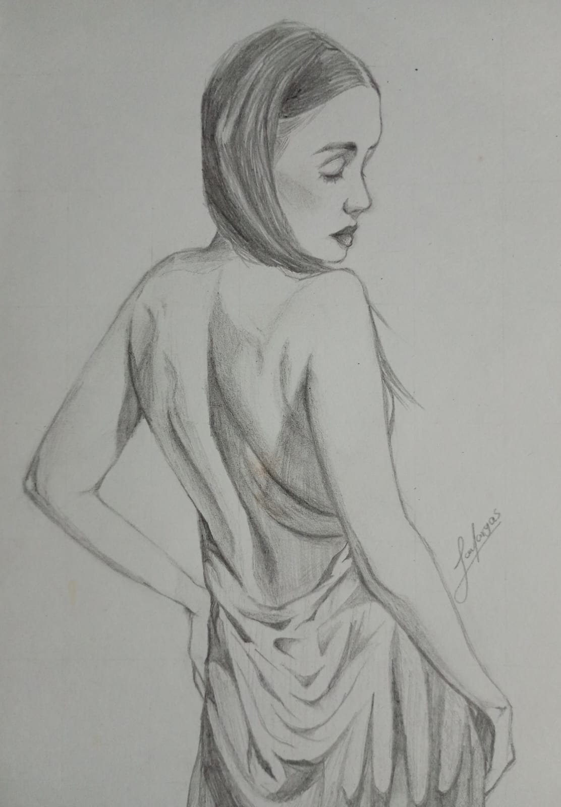
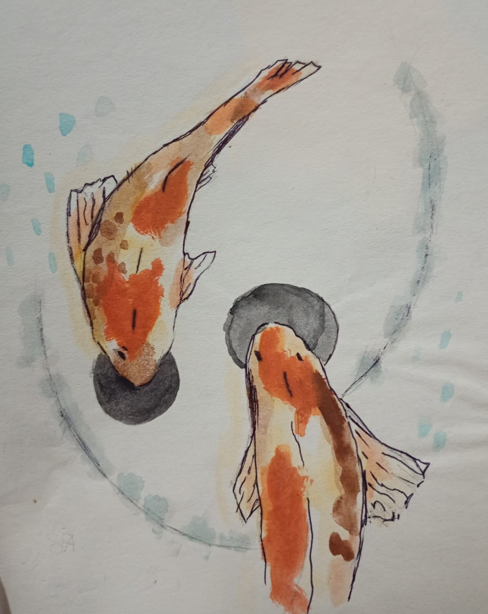
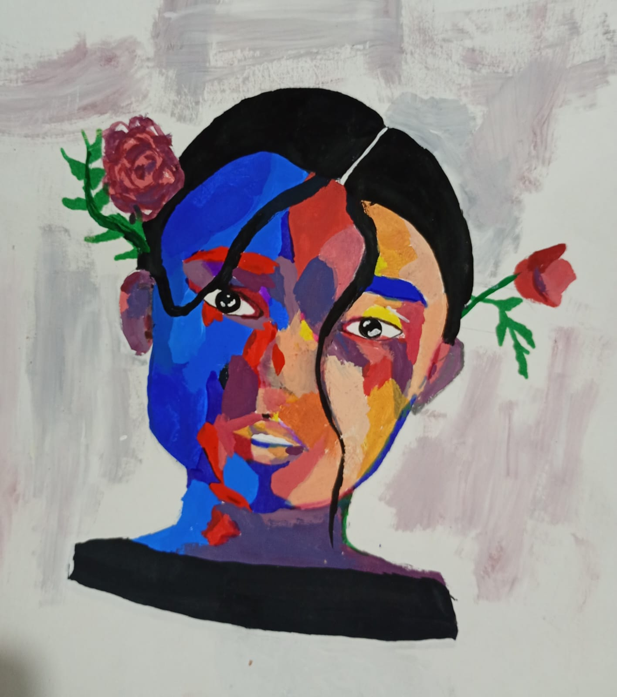
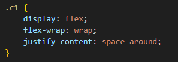
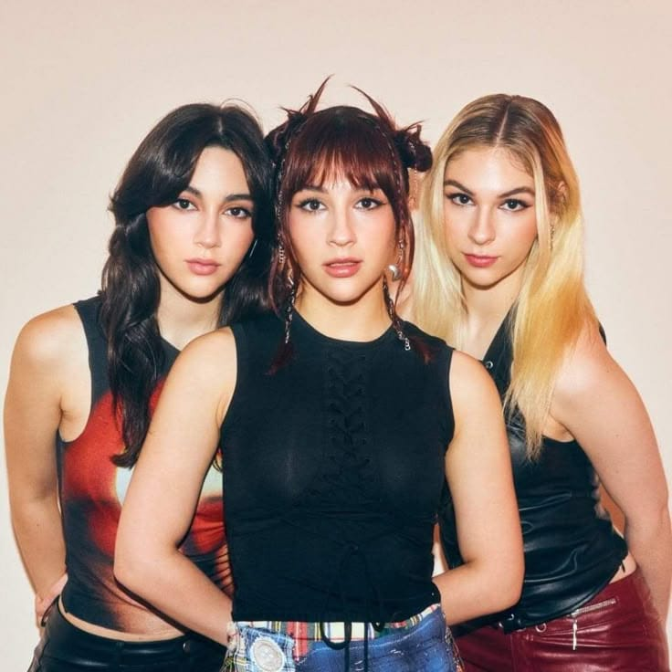
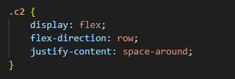
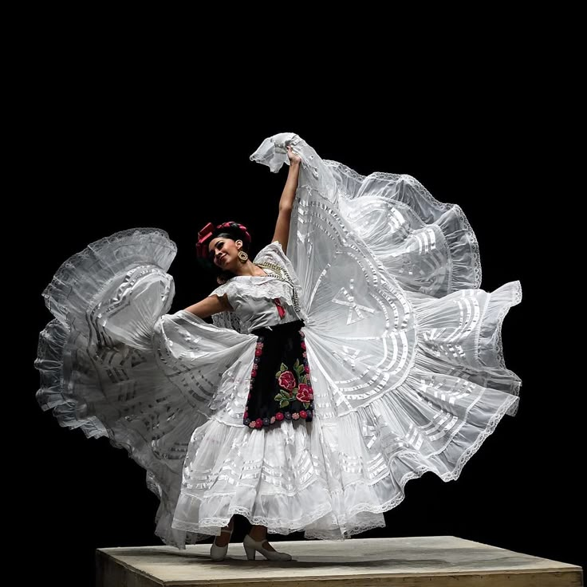
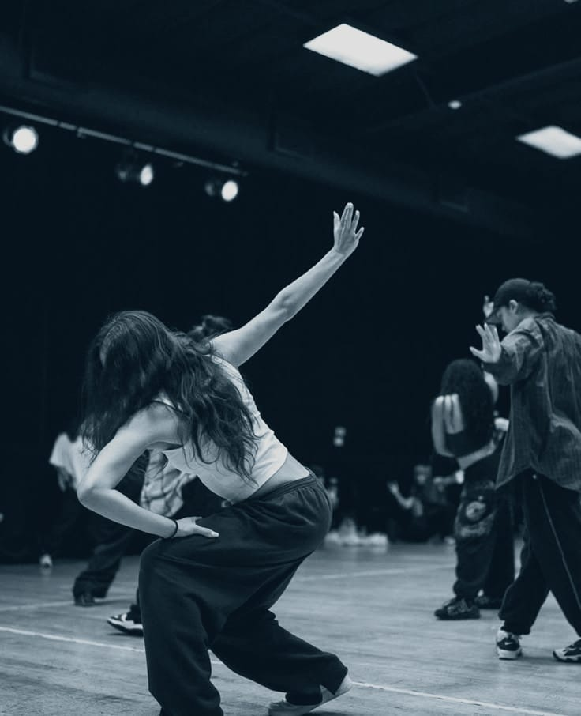
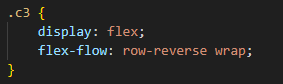
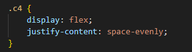

Grafito

Esta técnica es la que más uso y en la que necesitas menos materiales: solo un lapiz y borrador.

Esta técnica es la que más uso y en la que necesitas menos materiales: solo un lapiz y borrador.

Es una técnica que suelo usar de vez en cuando. En este estilo se usan más materiales como hojas de un buen grosor, pinceles y la paleta de acuerelas.

Es una técnica que uso poco pero que me encantaría dominarla y tener más habilidad para poder usarla sin miedo a estropear un dibujo.

BTS es una boy band surcoreana que sigo desde que estaba en primaria y tiene un gran valor sentimental para mí.

Es una banda de rock regiomontana, a estas chicas las conocí hace dos años y me atrapo su forma de escribir, tocar y cantar sus canciones. Las Villarreal se destacan por sus poderosos riffs, letras introspectivas y presencia arrolladora en vivo.


Es un baile que me gusta porque representa tradiciones de México. Tiene música y vestuarios muy coloridos, y es una forma divertida de conocer la cultura.

Es un estilo de baile moderno que me gusta porque es dinámico y creativo. Incluye diferentes formas como hip-hop y otros ritmos urbanos, y permite expresarte libremente mientras sigues la música. Es un pasatiempo divertido que también ayuda a mantenerme activa.
Me gustan porque son muy alegres y fáciles de disfrutar. Incluyen bailes como salsa, bachata, reguetón, etcétera y son perfectos para divertirse y pasarla bien.

Es un youtuber que me gusta ver porque hace videos viajando a diferentes países probando sus distintas sus gastronomías. Me gusta verlo cuando como.
Este canal hace podcast sobre el entorno escolar, me gusta mucho porque son muy divertidos de escuchar y ver, conecto muy bien con sus videos y su humor.
Este youtuber hace reseñas sobre lugares en especial de cdmx, pero ha hecho de lugares de otros estados o países, me gusta mucho su sinceridad sobre lo que visita o prueba.
Este canal me encanta, porque hace videos sobre historia de una forma muy visual y divertida, aprendo mucho con sus videos.
